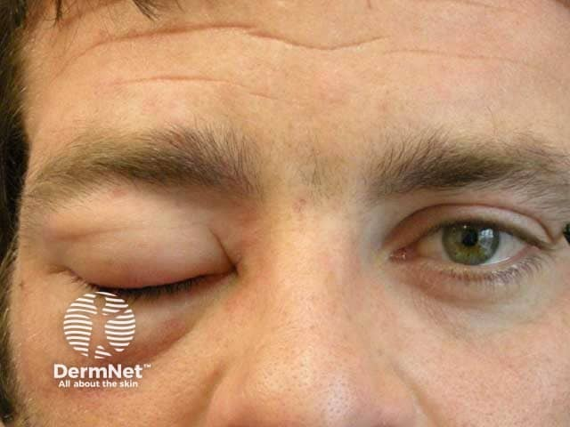
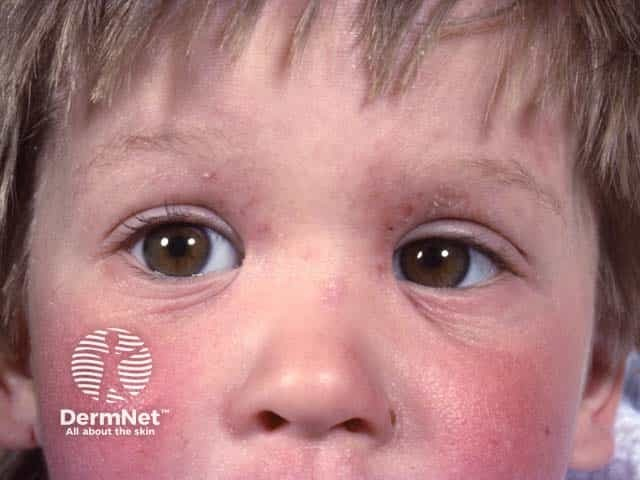

Mediada por IgE
Envolve anticorpos chamados imunoglobulinas E (IgE). As manifestações costumam surgir mais rapidamente após o contato com o alimento.

Informação é um dos primeiros passos para compreender a APLV. Conheça como essa alergia acontece, suas possíveis manifestações e a importância do acompanhamento profissional.
As informações apresentadas pelo LUMA possuem finalidade educativa e não substituem avaliação, diagnóstico ou orientação de profissionais de saúde.
A Alergia à Proteína do Leite de Vaca (APLV) é uma alergia alimentar na qual o sistema imunológico reage a proteínas presentes no leite de vaca.
Isso significa que, ao entrar em contato com essas proteínas, o organismo de uma pessoa com APLV pode desencadear uma reação imunológica.
As manifestações podem variar de uma pessoa para outra e envolver diferentes partes do organismo.
Nem todas as reações acontecem da mesma maneira. Dependendo do mecanismo imunológico envolvido, elas podem ser classificadas de diferentes formas.
Envolve anticorpos chamados imunoglobulinas E (IgE). As manifestações costumam surgir mais rapidamente após o contato com o alimento.
Outros mecanismos do sistema imunológico estão envolvidos. As manifestações podem aparecer de maneira mais tardia e frequentemente envolvem o sistema gastrointestinal.
Algumas condições podem envolver tanto mecanismos mediados por IgE quanto outros mecanismos imunológicos.
Apesar de serem frequentemente confundidas, são condições diferentes.
O sistema imunológico reage a proteínas presentes no leite de vaca.
O organismo apresenta dificuldade para digerir a lactose, o açúcar presente no leite. Não se trata de uma alergia às proteínas do leite.
A APLV pode se manifestar de diferentes maneiras. Os sintomas variam de acordo com o tipo de reação e podem envolver diferentes sistemas do organismo.

A urticária se manifesta pelo aparecimento de áreas avermelhadas e elevadas na pele, geralmente acompanhadas de coceira.
Em algumas reações alérgicas alimentares mediadas por IgE, ela pode surgir rapidamente após a exposição ao alimento.

O angioedema é caracterizado por um inchaço mais profundo, que pode atingir regiões como os lábios e as pálpebras.
Ele pode aparecer acompanhado de urticária durante determinadas reações alérgicas.

A dermatite atópica é uma doença inflamatória da pele que pode causar ressecamento, vermelhidão e coceira.
Em alguns pacientes, alergias alimentares podem estar associadas à piora da dermatite. Entretanto, apresentar dermatite atópica não significa necessariamente ter APLV.
Nem todas as manifestações da APLV são visíveis. Dependendo do tipo de reação, outros sistemas do organismo podem estar envolvidos.
Dependendo da forma de APLV, podem ocorrer manifestações como vômitos, diarreia, cólicas, desconforto abdominal e recusa alimentar.
Esses sintomas também podem ocorrer em diversas outras condições e devem ser avaliados dentro do quadro clínico completo.Algumas reações alérgicas podem envolver manifestações respiratórias, especialmente quando ocorrem junto a sinais em outros sistemas do organismo.
Sintomas respiratórios isolados não devem ser automaticamente atribuídos à APLV.A anafilaxia é uma reação alérgica grave que pode envolver diferentes sistemas do organismo e constitui uma emergência médica.
Em uma possível emergência, procure atendimento médico imediatamente.